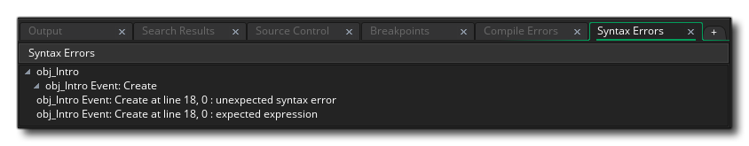

Cuando programe su juego, ya sea usando código o Arrastrando y Soltando, puede ser muy fácil cometer errores: usar las variables incorrectas, pasar los argumentos incorrectos o usar las funciones incorrectas son solo algunos de los errores más comunes que todos cometemos, y estos errores no siempre son detectados por el corrector de sintaxis que se incluye con el script / editor de acciones. Eso significa que estos errores solo se harán evidentes cuando realmente ejecutes o compiles tu juego, y aun así a veces puede ser difícil saber exactamente qué está pasando mal. Por lo tanto, puede ser de vital importancia saber cómo funciona su juego en el dispositivo elegido, así como ver qué instancias hay en la sala, qué variables globales se han creado y una gran cantidad de otros detalles.
Ahora puede verificar muchas de estas cosas usted mismo agregando el llamado "código de depuración" a sus juegos para mostrar en la pantalla la información que necesita, o puede tener que muestre los mensajes cuando hay un error, pero esto es a menudo mucho trabajo y si no está seguro de dónde está el problema en primer lugar, puede ser un caso lento de prueba y error para rastrear su error. Para eso, GameMaker Studio 2 tiene un modo de prueba especial llamado Debug Mode que iniciará el Debug Module, y también hay un completo sistema de informe de errores que muestra mensajes en tiempo de ejecución para ayudarlo a localizar cualquier problema con su juego.
Las siguientes secciones cubren las diferentes formas en que puedes depurar tu juego:
Cuando se produce un error durante la compilación y ejecución de un proyecto, esto se informa con un mensaje en la Ventana de salida de errores de compilación, muy parecido al que se muestra a continuación:
La mayoría de los mensajes de error del compilador siguen el mismo esquema, con un mensaje que indica el objeto en el que se produjo el error, luego el evento junto con el número de línea, y finalmente una breve descripción del error en sí. Este tipo de información que proporciona el informe de errores es muy importante ya que detecta e informa la sintaxis y los errores relacionados con el lenguaje que harán que el juego final se bloquee, pero no informará errores más sutiles, ni proporcionará comentarios en el rendimiento Para ese tipo de cosas, debe usar el Modo de depuración (se explica a continuación).
Además de estos errores de compilación, también puede obtener errores de sintaxis. Estos se detectarán a medida que agrega sus acciones o códigos DnD™ y se muestran en la Ventana de salida de errores de sintaxis, similar a la imagen que se muestra a continuación: 
Al igual que con los errores del compilador, la ventana de errores de sintaxis lo dirigirá al objeto, el evento y las líneas específicas que generan el problema, y a menudo se mostrará con una breve explicación de cuál es el error.
Si necesita verificar las cosas con más cuidado, puede ejecutar el juego en modo de depuración haciendo clic en el botón de ejecución de depuración
. Cuando lo haga, se abrirá el Módulo de depuración junto con su juego. Este módulo le permite controlar cómo funciona todo en su juego, desde el rendimiento global hasta los valores de variables individuales en instancias individuales. Puede encontrar más información sobre el Módulo de depuración y sus posibilidades y cómo usarlo desde la página siguiente:
Tenga en cuenta que cuando se utiliza el módulo de depuración, también puede agregar puntos de interrupción en el código o de no interrumpir™. Un punto de interrupción es un punto en el bucle del juego en el que desea que el módulo de depuración se detenga y le permita avanzar paso a paso por el código del juego una línea a la vez. Puede agregar puntos de interrupción con la tecla " F9 ", y se mostrarán en la Ventana de Salida donde puede habilitarlos / deshabilitarlos según sea necesario.
Cuando ejecute un juego para la depuración, también puede ver cómo funciona su juego y obtener una visión general de cómo funciona todo junto mediante la opción Perfil en el Módulo de depuración. Esto proporcionará información muy detallada sobre el rendimiento de un juego y el tiempo que lleva realizar llamadas o eventos de funciones específicas (consulte la sección sobre el módulo de depuración para obtener más información). Sin embargo, esto requiere que se ejecute el módulo de depuración, que puede no ser el que usted desea, especialmente si desea probar ejecutables finales en dispositivos, etc.
En estos casos, y como complemento al generador de perfiles, puede mostrar la barra de depuración en su juego, que mostrará mucha memoria, potencia de CPU y potencia de GPU que su juego esté usando.
Esta barra de depuración muestra un útil gráfico del uso de CPU / GPU en la ventana del juego propiamente dicha, y puede activarse y desactivarse en el juego utilizando la función show_debug_overlay(). Esta barra se divide en secciones, con cada sección en 1/60 de segundo. Como puede ver en la imagen a continuación, la barra está compuesta de varios colores, cada uno de los cuales muestra un aspecto diferente del rendimiento del juego, donde cuanto más grande es la barra, más tiempo requiere ese aspecto y mayor es el rendimiento alcanzado.:
- Verde - Procesamiento de entrada / salida (es decir: teclado, mouse, gamepad, redes, etc.)
- Rojo: la velocidad de actualización del evento de paso
- Amarillo: el tiempo requerido para el evento de sorteo
- Naranja - Tiempo de actualización de depuración, que solo es visible normalmente cuando utiliza el módulo de depuración
- Blanco: queda GPU en el tiempo, que es el tiempo que se pasa esperando a que la GPU termine de renderizar el marco antes de que pueda comenzar el siguiente
- Cyan - El tiempo de renderizado de texto
- Gris: el tiempo requerido para borrar la pantalla en cada paso de dibujo
- Rojo oscuro: el color de la GPU, que es el tiempo que tarda la GPU en borrar las imágenes de la memoria.
Además de las barras de colores, también hay algunos valores en la parte superior. Estos valores representan lo siguiente:
- FPS: este es el "Marco por segundo" de tu juego, y básicamente muestra qué tan rápido se está ejecutando tu juego. Este valor no está sujeto a la velocidad de juego de tu juego, y así te muestra con qué "overhead" tienes que jugar. Cuanto mayor sea este valor en comparación con la velocidad de tu juego, más suave será tu juego y más gastos generales tendrás para agregar más cosas. Tenga en cuenta que este valor puede variar mucho durante una sesión, pero cuando cierre el juego, la ventana de salida del compilador en GameMaker Studio 2 le mostrará los valores mínimos y máximos así como los valores promedio para esto (tenga en cuenta que el valor mínimo puede ser ¡negativo! Esto no es un error, sino debido a los tiempos de inicio y la forma en que se procesa el juego cuando se inicializa).
- Swaps de textura: este número muestra cuántas veces su juego intercambia texturas por cuadro de juego (el tiempo que tarda GameMaker Studio 2 para ejecutar todos los eventos es una marca de juego, y el número de tics de juego por segundo se establece por la velocidad de la sala). Las texturas (sprites y fondos) se almacenan en páginas de textura, y si tienes muchos elementos de imagen en tu juego, entonces GameMaker Studio 2 tiene que cambiar entre páginas de textura para dibujarlas todas, por lo tanto, si este valor es alto (más de 20, por ejemplo) realmente deberías buscar formas de optimizar esto ya que afectará el rendimiento de tu juego, especialmente en plataformas móviles.
- Lotes de vértices: esta es la cantidad de veces que el juego está enviando lotes de textura a la GPU por cada cuadro de juego, y (como con los Swaps de textura) quieres que este sea lo más bajo posible. Los lotes de texturas son básicamente paquetes de datos que se envían de una vez a la GPU para su procesamiento. El lote está "roto" cuando cambia una fuente, un color, un modo de fusión o cualquier otro estado de dibujo que afecte a cómo se dibujan las cosas a escala global, por lo que debe intentar limitar estas cosas a la menor cantidad de objetos posible desde una gran cantidad de lotes afectará negativamente el rendimiento de tu juego.
NOTA: los swaps de texturas y los lotes de vértices nunca serán cero y normalmente mostrarán valores de 2 o 3, ya que incluso con una habitación vacía y sin objetos, GameMaker Studio 2 aún tiene que dibujar y procesar por lotes cosas.Con estas herramientas puedes ver qué tan bien está funcionando tu juego y qué áreas necesitan "ajustes" para aumentar este rendimiento. Puede encontrar más información sobre problemas de rendimiento y formas de optimizar su juego en el Centro de ayuda de YoYo Games: Optimización de sus juegos.

Como una herramienta adicional para la depuración de juegos compilados, hay ciertos parámetros de línea de comandos que se pueden utilizar cuando ejecuta el paquete de juego final en la ventana. Para obtener información sobre cómo funciona esto, consulte aquí.